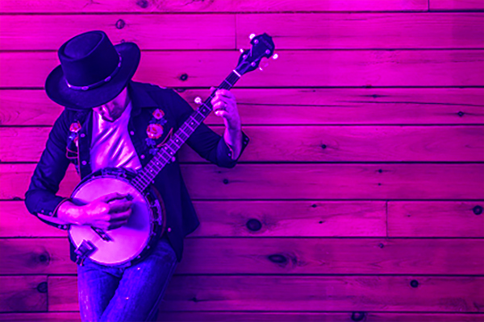

Schedule
Thursday - Folk
From soulful ballads to foot-stomping jigs, these musicians will transport you to the heart of folk culture with each captivating performance.
- The Folk Revivalists
- Hearthside Harmonies
- Wandering Minstrels
Friday - Rock
From classic rock anthems to modern hits, these acts bring powerful riffs and top performances that will keep you on your feet all night.
- Thunderstrike
- The Electric Rebels
- Midnight Riot
Saturday - EDM
From heart-thumping bass drops to euphoric melodies, these talented artists will bring you the ultimate dance party you won't want to miss.
- DJ Umlaut
- Kranky Pants
- Purple Skylines
Sunday - Hip Hop
From powerful lyrics to infectious grooves, this celebration of hip hop culture will have you moving and grooving all night long.
- Brake Dancer
- Earl Eriksson
- Current & Volt
Food Services
Hairy Larry's
Sink your teeth into the best burgers in town at Hairy Larry's, where every bite is a juicy, flavorful adventure!
Earl's Gray Lattes
Indulge in the perfect blend of comfort and sophistication at Earl's Grey Lattes, where every cup is a warm embrace of rich flavors and aromatic delights.
Eye Scream
Treat yourself to a chillingly delicious experience at Eye Scream, where every scoop is a scream-worthy delight!
Beer Haven
Raise your glass at Brew Haven, the ultimate beer garden where every pint is a craft masterpiece!
Pie Stop
What's a music festival without a nice blueberry pie? Enjoy home made pies with your music to make sure you get your fill. Sweet and savory, Pie Stop has everything you want in a pastry.
Pop's Nachos
Get your nacho fix over at Pop's Nachos. Salsa, guac, refried beans, and more! Customize your order to your stomach's delight!
Hours of Operation
The food trucks and beer gardens will be open from 10:00am until midnight during the festival. We are a cashless venue.